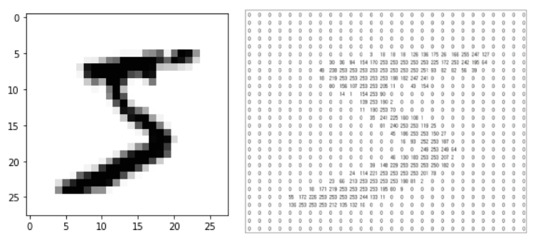
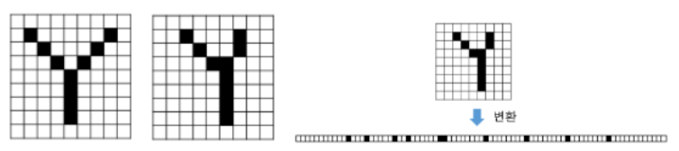
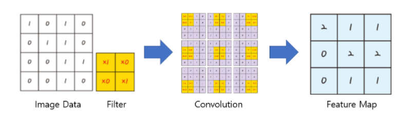
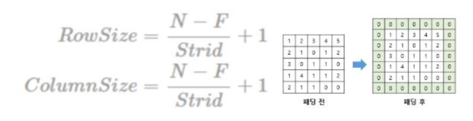
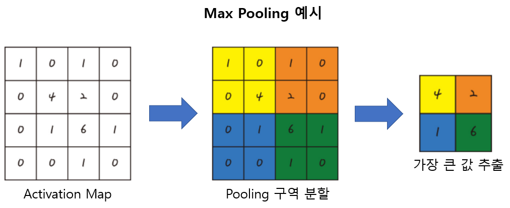

안녕하세요, 000님
CNN이란?
Convolution Neural Network의 줄임말로 이미지 처리에 탁월한 성능을 보이는 딥러닝 모델 중 하나입니다.
왜 이미지 처리에 탁월한가?
이것에 대해선 모델은 Convolution (합성곱) 연산을 통해 이미지의 공간적인 구조 정보를 보존하면서 학습하기 때문입니다.
이때 공간적인 구조 정보란 이미지의 인접한 픽셀들끼리 어떤 관계가 있는지 파악할 수 있는 정보를 말합니다.
이미지 데이터를 예시로 설명을 해보겠습니다.

우선 이미지 데이터를 봅시다. 이미지 데이터는 MNIST 데이터를 예를 든 것입니다.
(28,28,1) 즉 위 이미지는 28x28=784개의 픽셀로 이루어져 있습니다, 만약 이미지가 컬러라면, RGB로 빨간색, 초록색, 파란색으로 (28,28,3)
총 3개의 channel로 이루어진다고 말합니다.
우리는 모델에 이대로 데이터를 넣는 것이 아니라, 이 픽셀들을 오른쪽 사진처럼 명암에 따라 숫자로 바꾼 뒤 이를 1차원으로 바꾸어 모델에 넣어줍니다.
(여기서 말하는 모델은 기존 다층 퍼셉트론을 생각하면됩니다. 이것을 모든 층들이 유기적으로 연결되어 Fully connected layer에 연결한다고 말합니다.)
(*Fully connected Layer(Fc-Layer)는 말 그대로 모든 노드가 연결되어 있는 것을 의미하는데,
입력층을 거쳐 은닉층의 노드들이 모두 연결되어 가중치를 도출하는 기본적인 인공 신경망입니다.)
문제는 여기서 발생합니다. 3차원 이미지들을 1차원으로 바꾸어 Fully connected layer에 적용하면서,
각 픽셀들의 연관관계에 대한 정보 손실이 일어나고 같이 분류해야할 이미지를 올바르게 분류하지 못하게 됩니다.

직관적으로 이해하자면, 둘의 이미지를 같은 y라고 사람들은 인식합니다. 이미지는 이렇게 한 덩어리로 봐야하지만 모델에는 1차원으로 바꿔서 입력하기 때문에
각 픽셀간의 연관성의 정보 손실이 일어나고,
심지어는 왼쪽의 y의 1차원 배열값과 오른쪽 y의 1차원 배열값이 한개씩 밀려있고 약간의 균열이 있어 똑같은 y라고 인식하지 못하게 되는겁니다.
이것을 해결하는 방법이 Convolutional layer를 추가하는 방식입니다.
CNN이라고 완전히 다른 신경망이 아닌 기존의 신경망에서 입력층 이전에 Convolutional layer(합성곱 층)을 추가해주는 겁니다.
합성곱 층에서 이미지 벡터들의 연관관계에 대한 정보들, 이미지 특유의 공간에 대한 정보들을 지닌 Feature Map을 입력층에 input해줌으로써 더 좋은 결과를 얻어내는 CNN 모델이 되는 것이죠.
합성곱의 과정으로 공간에 대한 정보를 가진 Feature Map을 만드는 과정을 봅시다. tride = 1S로
설정하여 Filter를 한 칸씩만 이동하여 Feature Map을 만들어냈습니다. (*Stride는 이미지 데이터에 적용할 Filter를 얼마나 움직여 적용할지를 정하는 단위)
(*Feature Map은 이미지 데이터에 필터를 적용해 공간에 대한 정보를 지닌 변환 데이터) 두개의 함수를 이용해 적분한다는 합성곱의 개념이 여기에 적용됩니다.
필터에 적용된 가중치로 이미지 데이터의 부분 부분을 넓이로 표현한다는 개념이죠.


합성곱을 하면 위의 식처럼 피쳐맵이 작아지는 것을 알 수 있어요. (N은 이미지 데이터의 높이와 너비, F는 필터 사이즈)
convolution 레이어의 출력 데이터가 작아지는 것을 방지하기 위해서는 위와 같이 어떤 수로 외곽을 둘러싸는padding 기법이 필요합니다.
보통은 0으로 제로패딩을 이용합니다. 출력 데이터의 사이즈를 보호하면서도 인공 신경망에 외곽임을 인식시키는 효과도 있습니다.
지금까지 컨볼루션 층으로부터 이미지의 특징들을 도출하였습니다. 하지만 한 번만으로는 데이터가 여전히 크고 복잡해 다시 한번 더 축소해야 합니다. 이 과정을 Pooling또는 sub sampling이라고 합니다.

그림은 풀링 중에서도 가장 보편적인 MaxPooling 예시입니다.
컨볼루션으로 도출한 Activation Map(=Feature Map)의 구역을 분할하여 그 중
가장 큰 수를 구역의 대표값으로 정하는 것입니다.
다음은 기본적인 CNN 모델의 예시 코드입니다.